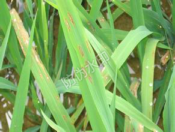

注册
|
登录
王学锋
退出
平台介绍
首页
专业大数据分析系统
大数据分析能力开放系统
数据运营平台
云数据开放平台
知识库
功能菜单
知识库管理
数据库链接
数据源配置
组件配置
组件展示
组件分组
知识库管理
注意：其中" * "为必填项。
基本信息
所属农作物：
水稻
蔬菜
*
病虫害种类：
病害
虫害
草害
鼠害
*
中文名：
*
英文名：
学名：
分类：
别名：
简介：
稻瘟病是水稻重要病害之一，可引起大幅度减产，严重时减产40%～50%，甚至颗粒无收。世界各稻区均匀发生。本病在各地均有发生，其中以叶部、节部发生为多，发生后可造成不同程度减产，尤其穗颈瘟或节瘟发生早而重，可造成白穗以致绝产。近年来，广东稻瘟病年发生面积不少于50万亩，而且出现逐年增加趋势，局部大爆发并不少见，目前，稻瘟病可能发生在省域内的任何年头、任何季节。
发生动态
图片：
发生动态相关文件1.jpg,发生动态相关文件2.. (共2张)
更改
说明：
主要为害叶片、茎秆、穗部。因为害时期、部位不同分为苗瘟、叶瘟、节瘟、穗颈瘟、谷粒瘟。苗瘟发生于三叶前，由种子带菌所致。病苗基部灰黑，上部变褐，卷缩而死，湿度较大时病部产生大量灰黑色霉层，即病原菌分生孢子梗和分生孢子。叶瘟在整个生育期都能发生。分蘖至拔节期为害较重。
发生特征
图片：
上传新图片
说明：
Phyricularia grisea （Cooke）Sacc.称灰梨孢=Pyricularia oryae Cav.称稻梨孢，属半知菌亚门真菌。有性态为Magnaporthe grisea （Hebert）Barrnov.属子囊菌亚门真菌。自然条件下尚未发现。分生孢子梗不分枝，3-5根丛生，从寄主表皮或气孔伸出，大小80-160×4-6（μm），具2-8个隔膜，基部稍膨大，淡褐色，向上色淡，顶端曲状，上生分生孢子。分生孢子无色，洋梨形或棍棒形，常有1-3个隔膜，大小14-40×6-14（μm），基部有脚胞，萌发时两端细胞立生芽管，芽管顶端产生附着胞，近球形，深褐色，紧贴附于寄主，产生生侵入丝侵入寄主组织内。该菌可分做7群，128个生理小种。
病原菌特征
图片：
上传新图片
说明：
稻瘟病是真菌寄生引起，青灰色霉即是病菌的分生孢子，病害的扩展靠分生孢子在空气中传播。病菌发育最适温度为25℃～28℃，高湿有利分生孢子形成飞散和萌发，而高湿度持续达一昼夜以上，则有利于病害发生流行。
危害症状
图片：
上传新图片
说明：
稻瘟病在整个水稻生育期都会发生，根据受害时期和部位的不同，可分为苗瘟、叶瘟、节瘟、穗颈瘟和谷粒瘟等，其中以穗颈瘟对产量影响最大。
寄主
图片：
上传新图片
说明：
主要为水稻
发生分布
图片：
上传新图片
说明：
近年来，广东稻瘟病年发生面积不少于50万亩，而且出现逐年增加趋势，局部大爆发并不少见，目前，稻瘟病可能发生在省域内的任何年头、任何季节。 南方农村报记者通过调查发现，近年，发病严重的水稻品种，有一些是已经通过国家或者省级农业部门审定合格的高抗稻瘟病品种，其中杂交水稻组合发病尤其严重，如天优998、特优452、内香优3号等。仅今年内早造稻瘟病发生较大面积的地方就有怀集内香优3号，128亩；紫金天优998，325亩；电白天优368，230亩……
防治方法
图片：
上传新图片
说明：
用56℃温汤浸种5分钟，可预防苗瘟病发生。 防治方法： 1、方案一：将稻瘟康或稻瘟康Ⅱ号按500倍液稀释，进行全株均匀喷雾，以不滴水为宜，7天用药一次。 2、方案二：病情严重时，用稻瘟康35ml+稻瘟康Ⅱ号35ml兑水15公斤，均匀喷雾全株，7天用药一次。 （二）预防方法： 将稻瘟康或稻瘟康Ⅱ号按500倍液稀释，进行全株均匀喷雾，以不滴水为宜，7天用药一次。 （三）用药时间：下午4点后。 （1）浸种剂： 10%抗菌剂401 乳油1000倍液 80%抗菌剂402 乳油8000倍液 浸种48—72小时，不需淘洗即可催芽。 （2）喷施： 20%井冈霉素可湿性粉剂1000倍液 10%抗菌剂401 乳油1000倍液 80%抗菌剂402 乳油8000倍液 2%春雷霉素水剂500倍液
确定
取消
×
Close
图片管理
编号
缩略图
名称
来源名称
操作
1

稻瘟病相关图片1
daowenbing.jpg
编辑
删除
2
稻瘟病相关图片1
daowenbing.jpg
编辑
删除
copyright@2011 JinheTech.ALL rights reserved.版权所有金禾天成 京ICP备11009730
 功能菜单
功能菜单